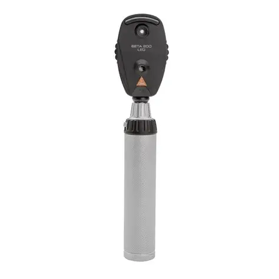
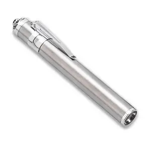
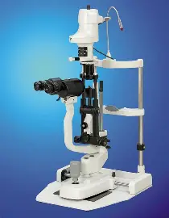
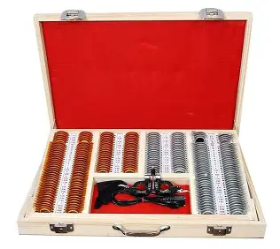

An ophthalmoscope is a handheld instrument used to examine the internal structures of the eye—especially the retina, optic disc, and blood vessels. It helps detect conditions like glaucoma, diabetic retinopathy, and retinal detachment.
A retinoscope is used to measure the refractive error of the eye objectively. By observing the movement of a light reflex on the retina, an examiner can determine whether a patient is myopic, hyperopic, or astigmatic.

A pen torch is a small light source used for basic eye examinations. It helps assess pupil reactions, anterior segment clarity, and eyelid or corneal abnormalities. It is also used for general screening in clinical practice.
A slit lamp is a microscope with a strong, adjustable beam of light used to examine the anterior and posterior segments of the eye. It provides detailed views of the cornea, lens, iris, conjunctiva, and vitreous, helping diagnose many eye diseases.
A trial lens set contains lenses of different powers used during refraction to determine a patient’s eyeglass prescription. The lenses are placed in a trial frame to refine visual correction for myopia, hyperopia, and astigmatism.
